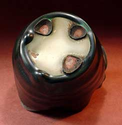
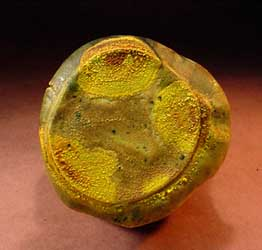

| Rascal Ware, Hairy Potter and Biloxi
This is the fifth chapter in a series of articles by Don Pilcher
on some of the characters that have been inspiring him and helping
him with creating his ceramic works. Feedback is welcome: Don Pilcher:
.
The Rascal Ware Foot Fetish, by Georgette Ore
(Chapter 5 in the 'Rascal Ware' series)
Junior Bucks, Mosley Bunkham and Don Pilcher have a collective ceramic
experience of about 92 years (the 2 belonging to Mosley) so you’d
think that by now they are immune to cheap tricks and stolen aesthetics.
But they are also men and they have a passion for exotic feet. I
count my blessings it’s not for erotic feet. They make no
apologies and you don’t want to press them on the matter because
they get very defensive, especially Junior. Since he writes the
checks, one needs to know when to drop it.
Still, the seashell thing. Honest to God, you talk about sucking
the hind tit of a foreign culture. The truth is that there are a
number of cool things you can do to dress up a pot. Lots of people
get a little weak in the knees when they see them…and I say
a little weak in the mind when they use them. Hold your stomach
- here’s a short list: using river stones for the knob on
a lid, frying the living bejeesus out of the clay by hanging the
work on the bag wall, torching a copper saturated glaze when cooling,
adding a marble base and three zeros to the price and double smoking
a talc body. The list goes on and you can add your own. (On the
other hand, double smoked bacon is pretty fine. You can get some
of the best at Vi’s in Door County.)
I first saw the seashell stilt on some pots made by Shoji Hamada
on Okinawa in the 1960s. I gather it was a common and ancient practice
then. Shells do seem like a gift from God to all the potters. They
are naturally resistant to high temperatures and wood or salt vapors,
sized for an array of pottery shapes, moderately decorative, wildly
abundant and free for the taking. If you travel to Florida in February
to gather your shells, the trip is in part tax deductible. That’s
the part that seduces Pilcher. In a pinch, Junior will send Mosley
out to the kitchen of the local Red Lobster to grab a few dozen
shells, remnants from the bouillabaisse. Seashells in the heartland
are one of the seldom appreciated aspects of our franchise culture.
So what’s the problem?

You can think of it as the heroin problem. Seashell stilts reduce
the distance between artistic impulse and aesthetic nirvana to almost
nothing. What’s more, it’s an aesthetic that requires
no practice and allows for almost no evolution or improvement. The
first time you use it you have accomplished the ultimate in “attractive
and eye pleasing” solutions. You’ll never get any better
at it. Further, the stilts cover a multitude of sins like poor glaze
application and careless firing. It’s choosing fortune over
finesse. That kind of sloth is addictive. The proof of this tide
of addiction is the growing frequency with which potters use shell
marks like a hickey on the sides of their jugs. At least on the
foot we sneak up on the ultimate, a coda to conclude our knowledge
and appreciation of the vessel. But these shell broaches fairly
scream, “I got laid.” And so they did—on their
side, next to the fire box.
Pardon my use of the word “vessel.” It seems popular
to use that word when one needs to pump an argument -- a sort of
literary marble base and always worth a few zeros. The fact that
the strategy is so common says volumes about our pottery world.
Going back to my guys and their foot fetishes -- they can’t
give it up. It comes from the “hunt,” that too male
thing where they will trample the good searching for the perfect.
They think it’s the coolest thing in the world to find an
aesthetic Shangri-La, hidden until handled and then, once touched,
it lives in their memory like the love of a woman who seldom speaks.
That would not be me!
About Don Pilcher: American studio potter and author.
Pilcher earned a BFA at the Chouinard Art Institute in Los Angeles
in 1964 and an MFA at the Rhode Island School of Design in 1966.
He taught at the University of Illinois at Urbana-Champaign from
1966-99, where he is now Professor Emeritus. He makes wheel-thrown
and altered functional ware. Images & text ©
Don Pilcher. Contact:
.
Rascal Ware Chapter 1/Español
Rascal Ware Chapter 2/Español
Rascal Ware Chapter 3
Rascal Ware Chapter 4
Rascal Ware Chapter 5
Rascal Ware Chapter 6
More Articles |
{kind=link}
{kind=link}